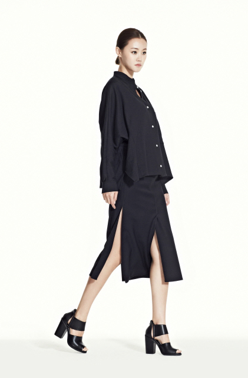

1.
톰보이 에서 옷을 왕창샀다.
한국올때 소장하고 싶은거나 비싼놈들(...) 빼고는
대부분 버리고 / 팔고 온것도 있긴있는데
서울 돌아댕기다보니 나만 너무 그지꼴(....)인거 같아서;;
한 한달 참다가 결국 폭주
백화점 이리저리 돌아댕기다 톰보이에서 하루에 7벌 쓸어옴 ㅋㅋㅋ
티셔츠 세장 + 원피스 두벌 + 가디건 + 자켓
+ 쉬즈미스 하늘색 자켓 한벌
톰보이 브랜드는 예전부터 좋아라 하긴했는데
가격대가 오히려 내려간 느낌(?)
동생곰 말로는 브랜드 자체가 망할뻔한 위기상황이 한번 있었다고
여튼 디자인 이나 스타일이 이날 둘러본 곳중 젤 내 취향이었당
위에 산거 말고도 체크무늬 롱 셔츠 드레스랑 야상이 늠 맘에들었는데
지금 사봤자 금방 더워져서 못입는다고
여름세일할때 연락줄테니까 그때오라고 직원분께서 만류 ㅋㅋㅋㅋ
얌전히 전화번호 적고 돌아왔다
여튼 톰보이 좋앙//퀄리티 비 가격대도 납득할만하고 // 내취향// 홍홍
오밤중에 사진을 찍어 올려볼까 싶어서 시도했으나
너무 못찍어서 포기 ㅜㅜ
공홈이나 인터넷을 뒤져서 찾아볼까 싶었으나 이것도 쉽지않앙;;
그나마 내가 산것중 깜장자켓 사진 하나 찾았다 :)
개인적 생각으로는 시즌별로 꾸준히 구입해야 하는 기본티 / 원피스 등등은
확실히 한국이 훨 싸다
질도 좋고 디자인도 많고 가격도 싸고
근데 가격을 좀 주고 구입하고싶은 브랜드 제품은
역시 직구를 해야하나 고민중^^;;; 한국 느므비싸;;;;;
플러스 백화점 내 매장 피팅룸
아니 왜 안에 거울이 없는겨;;;
옷입어봤다 정말 숭하고 맘에안들면
난 그 숭한모습 나만보고싶은데;;; 만인에게 공개하기싫어 ㅜㅜ
2.
한국 로드샵 브랜드 이것저것 사보면서 좋아하는중^^
스킨푸드 밀크쉐이크 포인트 메이크업 리무버:
그냥 무난
스킨푸드 생과일 립 앤 치크 방울토마토:
생각보다 색이 탁하다 / 나쁘진 않지만 엄청 좋은것도 모르겠당
아직 립팔레트에 대한 집착을 떨구지 못해서 이것저것 기웃거리고 있는데
전에 고양이 그림이 맘에안드네 어쩌네 하면서 샀던 슈에무라 슈페트 립팔레트는 느므 만족하면서 사용중
색이 정말 맑고 예쁘당 //ㅅ// 심지어 한색은 바닥도 보았다 +_+
토니모리 백젤 아이라이너 초코브라운:
손등에 슥 그었는데 엄청 안지워져서 놀람. 이거좋은건가?? 근데 아이라이너 잘 안그리면서 이건 왜샀지;;
에뛰드하우스 원더포어 프레쉬너:
완전 대용량 +_+ 맘에들오. 유진쓰의 추천으로 구입했는데 맘에들오 맘에들오 +_+
아멜리 플라스틱 자몽:
명동갔다가 색이 이뻐서 충동구매// 블러셔로 잘 쓰고있다// 아멜리는 색이 이쁜게 많아서 자꾸 구경하게 된당
여기저기 구경댕기면서 야곰야곰 지르고 개인정보를 팔아(...) 회원가입을 하는중
샘플 많이주는 한국// 좋아///
3.
놀것도 많고 5월부터 이벤트도 많아서 볼것도 많구
확실히 서울살이 음청 바쁘다 @_@
놀려면 체력을 길러야 것어 ^^;;;